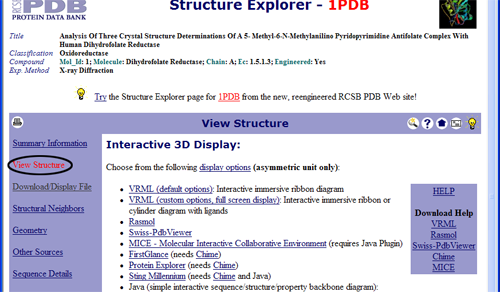
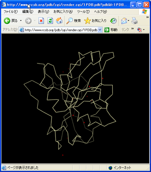
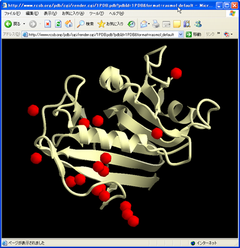

IE
Internet ExplorerでCueMol controlを使う¶
インストール¶
まずはActiveXコントロールのインストールについてです． Installにも書かれているとおり， CueMol本体のインストーラーのウィザードの， 「Select Additional Task」のところで， ActiveXコントロールのインストールを選択するとインストールされます． 一応，ActiveXコントロールは危ないのでいやだ， と思っている人もいるかもしれないので， 意図せずにインストールしてしまうのを防ぐようデフォルトはoffになっています （念のため，CueMolコントロール自体は，別にインストールしたからといって 危険なものではありませんが）．
ここで，「Register the CueMol ActiveX control」をチェックして インストールを行うと，install先ディレクトリ(defaultはC:\Program Files\CueMol 1.1)に，
- CueMolCtl.ocx (ActiveX control本体)
- ctlconfig.xml (ActiveX controlの設定)
の二つが追加でインストールされ，以下の処理が行なわれます．
-
CueMol SimpleMolView Objectというコントロールが， 32FF27E1-3414-42E4-A351-36C4499DAA65というGUIDでレジストリに登録される
-
chemical/x-rasというMIME typeに対して，上記のコントロールが関連付けられる
- pdbという拡張子を持つメディアタイプに対して，上記のコントロールが関連付けられる
RCSBのページでは¶
PDBのサイトで， 何かしらのPDBエントリーを検索し， Structure Explorerのページで，左のメニューの「View Structure」 をクリックします．すると，以下のように「Interactive 3D Display」 というのが出てきます.

ここで，RasmolあるいはSwiss-PdbViewerのリンクをクリックすると， 以下のように，ブラウザ中に分子が表示されます．

HTML文書が表示される部分（背景の黒い部分）がCueMolのコントロールです． この部分をドラッグすることで，分子を回転したりできます． 操作方法はアプリ版のCueMolと同じですが，クリックで残基番号を出したり 右クリックでコンテキストメニューを出したりは，今のところできません．
ところで，PDBの新しいサイトでは， メニューのVisualizeのplugin viewerのところを辿っても， 保存ダイアログが出てしまい，プラグイン表示になりません． 送られてくるHTTP Responce headerを見たところ，Content-Disposition: attachmentというのが以前のサイトに比べて余計についていますが， このせいでプラグイン表示にならないみたいです．（というわけで一応向こうのせいにしておきます）
デフォルト表示のカスタマイズ¶
インストールした状態では，上記のように，蛋白・核酸残基はtraceレンダラーで， それ以外はsimpleレンダラーで表示されるようになっていますが， 変更することも可能です．
startup.qsファイル（インストール先ディレクトリーの，scriptsディレクトリー中にある）の，最後のほうにsetupMolForCtrlという関数が定義されています． コントロールが分子を読み込んだ際に，$molnameにその分子名が引数として渡され， この関数が呼び出されます．
# setup renderers for embedded control
def setupMolForCtrl($molname) {
local $r, $r2;
$mol = qobj.getObj($molname);
$sel = se/resn ala,arg,asn,asp,cys,gln,glu,gly,his,hie,hid,hip,ile,leu,lys,met,mse,phe,pro,ser,thr,trp,tyr,val,gua,ade,uri,cyt,thy/;
$mol.select($sel);
$r = $mol.createRend("0", "trace");
<!!!!!!>
$mol.select(!$sel);
$r2 = $mol.createRend("1", "simple");
<!!!!!!>
gfx.setCenter($r.getCenter());
gfx.updateView();
}
上記のデフォルトの実装では，蛋白・核酸残基を選択してtrace rendererを作成し， それ以外の原子を選択してsimple rendererを作成し， trace rendererの中心にviewの中心を設定しています．
たとえば，traceでなくribbonレンダラーを,simpleでなくcpkレンダラーを 作るようにすると，コントロールで分子を表示したときに， 表示が以下のように変わります．

startup.qsはコントロールの起動時にのみ読み込まれるので， 変更した場合はブラウザのリロードボタンを押さなければ更新されません．
QScriptのチュートリアルページを参考に，表示をカスタマイズしてみてください． あと，リボン表示にするなら，コントロール中では軽い表示にしたほうが良いので， レンダラーのプロパティーを調節して，リボンの分割数などを減らした方が良いでしょう．
ページを自分で作る場合¶
以上はRCSBのサイトでの話でしたが，自分でホームページを作って そこでPDBファイルを表示させたい場合があるかもしれません．
一番簡単なのは，単にaタグでPDBファイルにリンクを張ることです．
<a href="foo.pdb">foo.pdb</a>
サーバー側がpdbという拡張子を認識して， ちゃんとMIME Typeをchemical/x-rasで送ってくれれば， ブラウザ中に分子が表示されるでしょう． あと，サーバーの設定がちゃんとなされていない場合でも， IEの方で拡張子で認識してプラグインで表示してくれる場合もあります．
CGIを使って，MIME Typeをchemical/x-rasにし， catでPDBファイルを表示するという手もあります． 最も簡単に，shで書くと以下のようになるでしょう．
#!/bin/sh
cat <<EOF
Content-Type: chemical/x-ras
EOF
echo; # 空行が必要！！
cat /home/ishitani/public_html/cgi-bin/test.pdb
以上のやり方だと，必ず全画面（ブラウザの中での）になってしまいますが， ページの一部分に分子を表示したいことがあるかもしれません． そういうばあいは，embedタグやobjectタグを使います．
<embed type="chemical/x-ras" src="sheet.pdb" width="100" height="100" />
typeは要らないかもしれません．srcでPDBファイルを指定します． width, heightでHTML上でのピクセル単位の大きさを指定します． 一方，objectタグを使う場合は，以下のようにします．
<object id="MolView" width=300 height=300
classid="CLSID:32FF27E1-3414-42E4-A351-36C4499DAA65">
<param name="src" value="http://www.rcsb.org/pdb/cgi/export.cgi?format=PDB&pdbId=1PDB&compression=None">
</object>
idはコントロールの名前で，ページ中のjavascript等からこのコントロールを 操作する場合には必須ですが，そういった使い方をしない場合は適当でOKです． width, heightは文字通りで，classidには，インストールの項目で説明した コントロールのGUIDを指定します．よくわからない場合は， 上記のように指定しておけば，ともかくもCueMolのコントロールが動きます． そしてさらに，paramタグで，ソースのURLを指定します．上記の例では，PDBサイトへの 直リンを指定していますが， もちろんローカルのURLで何とか.pdbというのを指定することもできます．
objectタグを使ったほうが記述が煩雑になりますが， こっちのほうがHTMLの標準でembedはネスケの拡張だったと思います． さらに，分子表示のActiveXコントロールを複数入れた場合でも， 使いたいほうのGUIDを指定すれば，好きなほうが使えるという利点があります． MIME typeも気にする必要がありません．
ただ，classidを指定してActiveXコントロールを埋め込む方法は （ActiveXを使っている時点で当たり前ですが）IEでないと動きません．
JavaScriptを使う¶
（開発中）
セキュリティーについて¶
CueMolコントロール自体には，QScriptを実行する機能など アプリ版のCueMolとほぼ同じ機能がありますが， ネットワーク上のコンテンツに埋め込んで使う場合は 自由にQScriptを実行できないようになっています． ローカルにあるstartup.qsが起動時に実行される以外は， PDB形式のファイルしか読み込めないようになっています． これは，ネットワーク上の悪意のあるスクリプトを実行してしまうのを 防ぐためです．
一方次の項目で説明する，PowerPoint等のローカルのドキュメントに 埋め込んで使用する場合には，全てのファイル形式を読み込むことが 可能になっています．